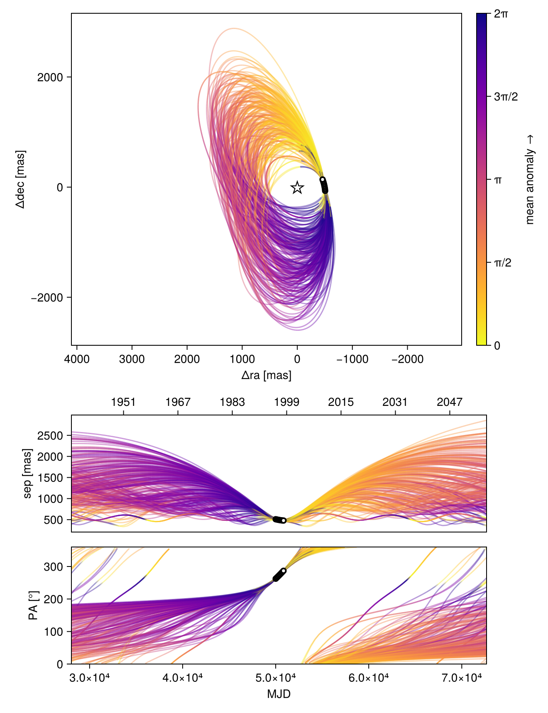
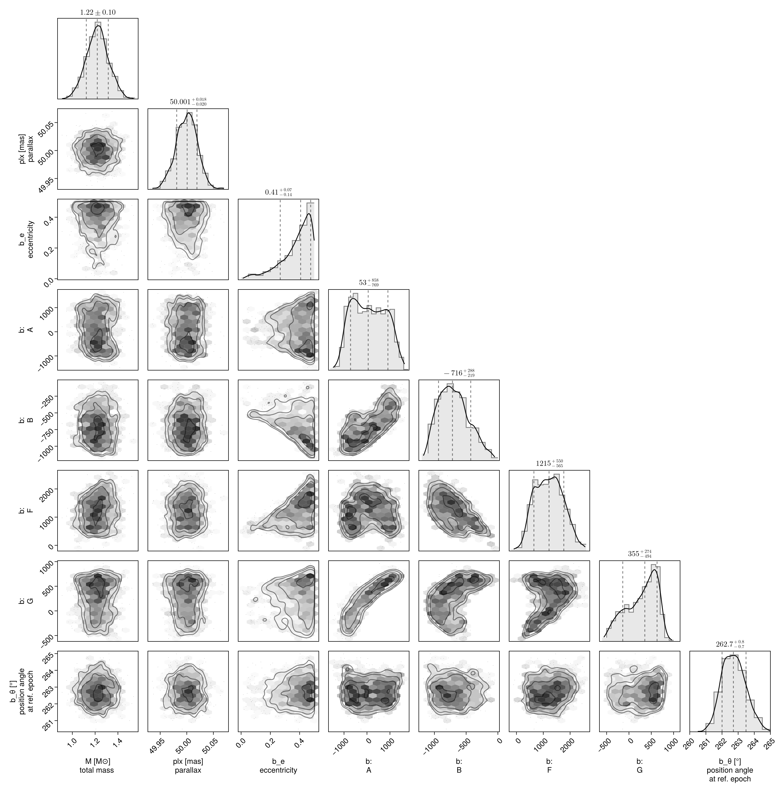

Fit with a Thiele-Innes Basis
This example shows how to fit relative astrometry using a Thiele-Innes orbital basis instead of the traditional Campbell basis used in other tutorials. The Thiele-Innes basis is more suitable then Campbell for fitting low-eccentricity orbits, because it does not have the issues where ω, Ω, and tp become degenerate as eccentricity and/or inclination fall to zero.
At the end, we will convert our results back into the Campbell basis to compare.
using Octofitter
using CairoMakie
using PairPlots
using Distributions
astrom_like = PlanetRelAstromLikelihood(
(epoch = 50000, ra = -505.7637580573554, dec = -66.92982418533026, σ_ra = 10, σ_dec = 10, cor=0),
(epoch = 50120, ra = -502.570356287689, dec = -37.47217527025044, σ_ra = 10, σ_dec = 10, cor=0),
(epoch = 50240, ra = -498.2089148883798, dec = -7.927548139010479, σ_ra = 10, σ_dec = 10, cor=0),
(epoch = 50360, ra = -492.67768482682357, dec = 21.63557115669823, σ_ra = 10, σ_dec = 10, cor=0),
(epoch = 50480, ra = -485.9770335870402, dec = 51.147204404903704, σ_ra = 10, σ_dec = 10, cor=0),
(epoch = 50600, ra = -478.1095526888573, dec = 80.53589069730698, σ_ra = 10, σ_dec = 10, cor=0),
(epoch = 50720, ra = -469.0801731788123, dec = 109.72870493064629, σ_ra = 10, σ_dec = 10, cor=0),
(epoch = 50840, ra = -458.89628893460525, dec = 138.65128697876773, σ_ra = 10, σ_dec = 10, cor=0),
)
@planet b ThieleInnesOrbit begin
e ~ Uniform(0.0, 0.5)
A ~ Normal(0, 10000) # milliarcseconds
B ~ Normal(0, 10000) # milliarcseconds
F ~ Normal(0, 10000) # milliarcseconds
G ~ Normal(0, 10000) # milliarcseconds
θ ~ UniformCircular()
tp = θ_at_epoch_to_tperi(system,b,50000.0) # reference epoch for θ. Choose an MJD date near your data.
end astrom_like
@system TutoriaPrime begin
M ~ truncated(Normal(1.2, 0.1), lower=0)
plx ~ truncated(Normal(50.0, 0.02), lower=0)
end b
model = Octofitter.LogDensityModel(TutoriaPrime)LogDensityModel for System TutoriaPrime of dimension 9 with fields .ℓπcallback and .∇ℓπcallback
We now sample from the model as usual:
using Random
Random.seed!(0)
results = octofit(model)Chains MCMC chain (1000×24×1 Array{Float64, 3}):
Iterations = 1:1:1000
Number of chains = 1
Samples per chain = 1000
Wall duration = 7.72 seconds
Compute duration = 7.72 seconds
parameters = M, plx, b_e, b_A, b_B, b_F, b_G, b_θy, b_θx, b_θ, b_tp
internals = n_steps, is_accept, acceptance_rate, hamiltonian_energy, hamiltonian_energy_error, max_hamiltonian_energy_error, tree_depth, numerical_error, step_size, nom_step_size, is_adapt, loglike, logpost, tree_depth, numerical_error
Summary Statistics
parameters mean std mcse ess_bulk ess_tail ⋯
Symbol Float64 Float64 Float64 Float64 Float64 Fl ⋯
M 1.2210 0.0967 0.0036 703.3962 436.7610 1 ⋯
plx 49.9998 0.0199 0.0006 1067.6864 607.3337 1 ⋯
b_e 0.3768 0.1079 0.0067 264.5435 202.1112 1 ⋯
b_A 89.0689 714.2376 63.2509 132.2819 449.4194 1 ⋯
b_B -692.1892 236.1965 18.1529 182.2616 348.9151 1 ⋯
b_F 1219.7368 518.7856 35.6694 211.5941 359.2480 1 ⋯
b_G 276.8470 341.3388 33.5109 114.4126 255.8135 0 ⋯
b_θy -0.1274 0.0187 0.0008 505.2783 418.3724 0 ⋯
b_θx -0.9993 0.0995 0.0043 596.6408 355.0794 1 ⋯
b_θ -1.6975 0.0127 0.0005 571.6425 580.3821 0 ⋯
b_tp 18016.2325 31602.3393 1984.2038 409.8543 786.2907 1 ⋯
2 columns omitted
Quantiles
parameters 2.5% 25.0% 50.0% 75.0% 97.5% ⋯
Symbol Float64 Float64 Float64 Float64 Float64 ⋯
M 1.0341 1.1557 1.2191 1.2817 1.4116 ⋯
plx 49.9591 49.9864 50.0007 50.0129 50.0363 ⋯
b_e 0.0894 0.3251 0.4070 0.4620 0.4960 ⋯
b_A -1035.7695 -524.3640 53.3576 692.6645 1327.0130 ⋯
b_B -1065.4100 -875.0783 -715.5954 -538.3092 -184.3885 ⋯
b_F 357.5149 794.3140 1215.1603 1593.9256 2214.5432 ⋯
b_G -409.1078 12.8711 355.0996 560.2517 739.5704 ⋯
b_θy -0.1661 -0.1395 -0.1268 -0.1149 -0.0924 ⋯
b_θx -1.2229 -1.0567 -0.9955 -0.9309 -0.8254 ⋯
b_θ -1.7202 -1.7070 -1.6981 -1.6890 -1.6717 ⋯
b_tp -46507.3375 -7184.1770 20909.9417 48485.9011 49824.2756 ⋯
Notice that the fit was very very fast! The Thiele-Innes orbital paramterization is easier to explore than the default Campbell in many cases.
We now display the results:
octoplot(model,results)
octocorner(model, results, small=false)
Conversion back to Campbell Elements
To convert our chain into the more familiar Campbell parameterization, we have to do a few steps. We start by turning the chain table into a an array of orbit objects, and then convert their type:
orbits_ti = Octofitter.construct_elements(results, :b, :) # colon means all rows1000-element Vector{ThieleInnesOrbit{Float64}}:
ThieleInnesOrbit{Float64}(0.325844296858246, 49022.41230206364, 1.15107355369917, 49.9840684323019, -451.60438389629655, -781.8138930146428, 920.7244018165537, -14.859071199260304, -12.979583034715462, -12.464001124092425, 35712.337572054275, 0.06426026915689069, 1.4023814418980811)
ThieleInnesOrbit{Float64}(0.4753286009874484, -36455.65794305017, 1.0195423672537387, 50.02303846652228, 300.2107231086492, -860.9448441789971, 1850.1496895919404, 586.0757526548389, -34.25412797069528, 0.5933188009551428, 87429.13850241073, 0.026248507807710698, 1.676874983155379)
ThieleInnesOrbit{Float64}(0.3841374806628442, 243.98743111504155, 0.9491895882235475, 50.026396225355626, 852.7318691770894, -506.8368149349742, 1035.5926514397518, 568.6275884134816, -18.270140551169145, 13.0103838433357, 52487.255249619615, 0.043722698275760565, 1.499159107065872)
ThieleInnesOrbit{Float64}(0.4118930834987635, 49495.75696367465, 1.5376338639975606, 49.99677984867433, -335.68195306302584, -898.40937920455, 1834.98459026471, 231.22334712375408, -33.15473598172728, -9.938978777200907, 69827.14327086491, 0.03286521998615801, 1.5494328590160549)
ThieleInnesOrbit{Float64}(0.4062314569803391, -34534.17958476569, 1.0995555351812403, 49.994904830182186, 257.4194744204834, -753.3610753218902, 1867.4544911947746, 595.3907462073466, -35.82756131741029, 0.3592932158226277, 85510.34217443234, 0.026837507209603005, 1.538933351042887)
ThieleInnesOrbit{Float64}(0.45472584481253964, 48188.46538715078, 1.438705926649256, 50.00512821452788, -869.4745305124792, -835.5029488592423, 594.2978147376676, -388.3387622359555, -3.8692570473118453, -19.872466096069992, 36752.564846161404, 0.06244147678421512, 1.6333645310507916)
ThieleInnesOrbit{Float64}(0.35822559286812156, 49906.43938556853, 1.106986931762478, 49.989612692836616, -116.44085669749016, -799.1621471653049, 1529.1653237861706, 358.8250941475927, -27.76907513144728, -6.698241677879604, 63213.01872648887, 0.03630398406586927, 1.4547714107610001)
ThieleInnesOrbit{Float64}(0.2659982311380119, 5009.075694301842, 1.1965484163376996, 49.99126446534777, 213.38452202778518, -624.5964213532044, 1273.3077615324698, 390.1943007843468, -23.14272022166593, 0.48395325800962935, 45921.630728720585, 0.04997393141717565, 1.3133122529980854)
ThieleInnesOrbit{Float64}(0.3197959921510224, -11262.06719127133, 1.2340336925906379, 49.9681008897465, 550.6442066555641, -572.2366036198894, 1529.1242681635215, 549.9135696623548, -29.2755175899729, 7.21416772918931, 63212.80826091504, 0.03630410493913925, 1.3929444886085909)
ThieleInnesOrbit{Float64}(0.4467876764856522, -18517.67786789035, 1.2749468044865502, 50.00905085345396, 116.30396424437255, -876.9273107946759, 1737.5189458308814, 404.3343749986359, -31.040029903172897, -1.9643837084884808, 69074.90105827627, 0.03322313010142176, 1.6171729835877955)
⋮
ThieleInnesOrbit{Float64}(0.428054670215012, 18953.318041648683, 1.2736752820977495, 49.984708995579105, 1145.655906703122, -47.50833110190832, -69.15591961269557, 584.5327460441274, -2.162362407186466, -19.80510531085037, 35794.65204481082, 0.06411249428347605, 1.5801385112727369)
ThieleInnesOrbit{Float64}(0.4958636933472838, 1237.0156112019977, 1.0646939232248842, 49.964785832928, 1231.6749750576444, -387.07538751744653, 650.2480732097313, 715.5850558607308, 10.459115504762375, -20.06470460304332, 52097.28935248717, 0.04404997751562267, 1.7225507380915068)
ThieleInnesOrbit{Float64}(0.4255070217775427, 4969.5078397361285, 1.3529912699463906, 50.039129580946046, 1416.7365547988495, -165.5191723776586, 378.96885698358636, 651.0349480324919, -6.815479393251433, 25.146836887911597, 49822.56601984999, 0.04606114473685748, 1.5752239925981226)
ThieleInnesOrbit{Float64}(0.4526775539645255, -4429.536128545587, 1.2853505473719553, 50.054402720042575, 1034.4445381816465, -605.0604162356134, 1190.2645119888257, 577.4870533616455, -20.498345780457463, 17.170794288442753, 57005.1953575736, 0.04025746092451649, 1.6291571675154766)
ThieleInnesOrbit{Float64}(0.4677240566851079, 49102.72953823749, 1.2440605667814126, 50.003227955867935, -440.22429830353747, -1041.12308748695, 2449.5152073453714, 541.9001158342094, -46.92683785747783, -13.998887213983604, 123102.32726373954, 0.01864208805480413, 1.6605569978408117)
ThieleInnesOrbit{Float64}(0.4243055009602446, 48993.22181152523, 1.3668164791135728, 50.00280280550153, -532.5048235287676, -946.5661769785177, 1823.9462901975817, 230.8862944989233, -32.98807419508473, -14.425528043860286, 77547.01044115827, 0.029593460941260637, 1.5729160210457733)
ThieleInnesOrbit{Float64}(0.25739824103549297, 7324.122412282668, 1.2175762378410524, 49.98106298022517, 716.603832067636, -478.61663426455186, 1111.7065274035808, 435.71883369801543, -20.223314247813377, 11.641150499716403, 45347.114497990944, 0.0506070661828686, 1.3012430934822232)
ThieleInnesOrbit{Float64}(0.3329312935893883, -10976.48272284236, 1.2367494693873835, 50.00263572920663, 124.85535712035384, -717.1582054927926, 1569.4363746599015, 461.8678459813469, -29.35855931706008, -1.842944863819901, 61610.142932913084, 0.037248484021548754, 1.4135741620224178)
ThieleInnesOrbit{Float64}(0.4428686559695544, -32501.71935506232, 1.2183059427800462, 50.008171722008974, 401.3254219615527, -822.2672878703354, 1946.1078090945152, 382.09006840444914, -35.57509499511936, 5.247376734983991, 83726.7905914554, 0.027409200906790145, 1.6092910773850002)Here is one of those entries:
display(orbits_ti[1])We can now make a table of results (and visualize them in a corner plot) by querying properties of these objects:
table = (;
B_a = semimajoraxis.(orbits_ti),
B_e = eccentricity.(orbits_ti),
B_i = rad2deg.(inclination.(orbits_ti)),
)
pairplot(table)We can also convert the orbit objects into Campbell parameters:
orbits_campbell = Visual{KepOrbit}.(orbits_ti)
orbits_campbell[1]KepOrbit{Float64}
─────────────────────────
a [au ] = 22.2
e = 0.3258443
i [° ] = 54.0
ω [° ] = 226.0
Ω [° ] = 28.5
tp [day] = 49000.0
M [M⊙ ] = 1.15
period [yrs ] : 97.8
mean motion [°/yr] : 3.68
──────────────────────────
plx [mas] = 50.0
distance [pc ] : 20.0
──────────────────────────